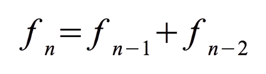

Calculadora de serie de Fibonacci

Especifique el nº de Fibonacci que quiera calcular:
Mostrar todos los números calculados?
El resultado se mostrará aquí:
● ¿Cómo está hecho?
La página calcula términos muy grandes de la serie de Fibonacci, tan extensos que no caben en un número normal de JavaScript. Para resolver esto, utiliza arrays, que funcionan como una lista de casillas donde se guarda el número dividido en partes. Cada casilla almacena un segmento del número (en este caso, nueve dígitos usando 32 bits), y juntos forman el valor completo, permitiendo representar cifras enormes sin perder precisión.
Para que todos estos cálculos intensivos no bloqueen la página ni hagan que deje de responder, se usa un Web Worker, que es un proceso separado del hilo principal del navegador. Así, el cálculo ocurre en segundo plano y la página puede seguir mostrando el progreso, actualizando la barra y respondiendo a las interacciones del usuario sin interrupciones.